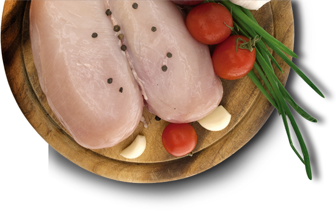

Aunque alimentarse bien pareciera ser una moda, es una necesidad del ser humano; Hipócrates decía
“Que tu medicina sea tu alimento y el alimento tu medicina” un mensaje que simplifica la importancia de alimentarse bien,
por eso en Bucanero estamos atentos a acompañarte en tu proceso alimenticio para que lleves una vida saludable.
